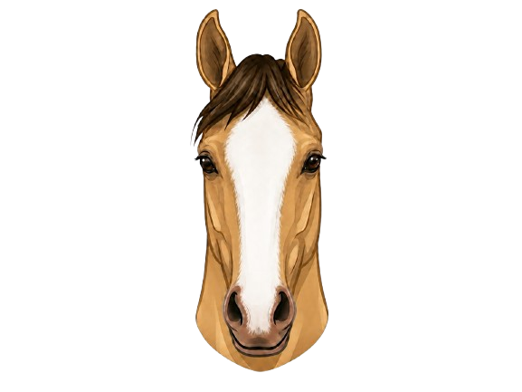
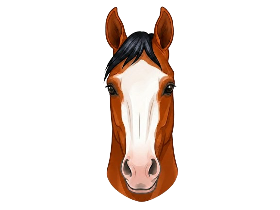
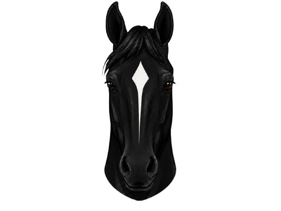
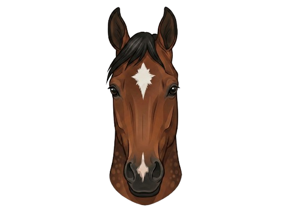

Forehead
ForeheadStar
A white marking on the forehead, between or above the eyes. Can be any shape — round, oval, irregular, or faint. Recorded by shape and position.
Explore the most common horse facial markings and learn how different patterns are identified, named, and described through clear visual examples.

Horse facial markings come in many shapes and variations, but some are seen far more often than others. This guide focuses on the most common markings learners are likely to encounter, including individual markings, combination patterns, and a few irregular variations. Use the tabs below to explore each group.
These five markings form the foundation of all face marking identification. Every other marking is either a combination or a variation of these core types.
ForeheadA white marking on the forehead, between or above the eyes. Can be any shape — round, oval, irregular, or faint. Recorded by shape and position.
 Nasal Bone
Nasal BoneNarrow white strip that runs down the center of the face on the bridge of the nose.

Full FaceA broad white marking that runs down the length of a horse's nose. They are wider than a strip, but not as wide as a bald face.
 Muzzle
MuzzleA white marking on the muzzle — specifically between, around, or just above the nostrils.

Full FaceA very large white marking covering most of the face — typically from forehead to muzzle and extending around or over the eyes. Often includes pink (unpigmented) skin around the eye and one or both eyes could possibly be blue.
Combination markings occur when two or more markings appear on the same face. Each marking is named and described individually, then noted together. The photos below show examples of the most common combinations.

Forehead + NasalA Star on the forehead and a Strip running down the nasal bone. They can be connected or possibly be disconnected by the horse's base coat color.

Forehead + MuzzleA Star on the forehead and a separate Snip on the muzzle.
 Nasal + Muzzle
Nasal + MuzzleA Strip running down the nasal bone and a Snip on the muzzle. They can be connected or possibly separated by the horse's base coat color.
 Forehead + Nasal + Muzzle
Forehead + Nasal + MuzzleThree separate marks: a Star on the forehead, a Strip along the nasal bone, and a Snip on the muzzle. The most common three-part combination in the breed registry.
Irregular markings are variations that don't match the standard descriptions exactly. They are still recorded accurately — a crooked strip is noted as crooked, a faint star is described as faint.
 Variation
VariationA Blaze that does not follow a straight, symmetrical path. It may veer to one side, have rough or uneven edges, or be significantly wider on one side than the other.
 Variation
VariationA Strip that deviates from the midline — running off-centre, bending, or following a curved path down the nasal bone rather than a straight vertical line.
 Variation
VariationA Strip that stops and starts — not continuous. The gaps between white sections are noted in the official description, as they distinguish it from a solid Strip.
 Variation
VariationA facial marking that appears noticeably to the left or right instead of centered on the horse's face. Offset markings are commonly described by the direction they shift.